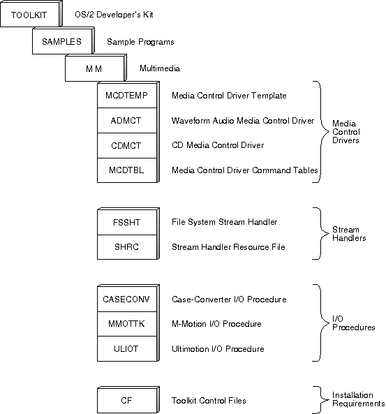

OS/2 multimedia (referred to as Multimedia Presentation Manager/2 or MMPM/2 in previous releases) has an extendable architecture that makes it possible to add new functions, devices, and multimedia data formats as the technology of multimedia advances. This chapter provides a general overview of the subsystem components provided with the OS/2 multimedia system. Subsequent chapters include detailed guidelines on how to develop and install your own OS/2 multimedia subsystem through the use of the sample programs illustrated in the following figure. Each sample program serves as a template that can be modified easily to meet your multimedia requirements. Use these sample programs to develop and install media control drivers, stream handlers, and I/O procedures for OS/2 multimedia.